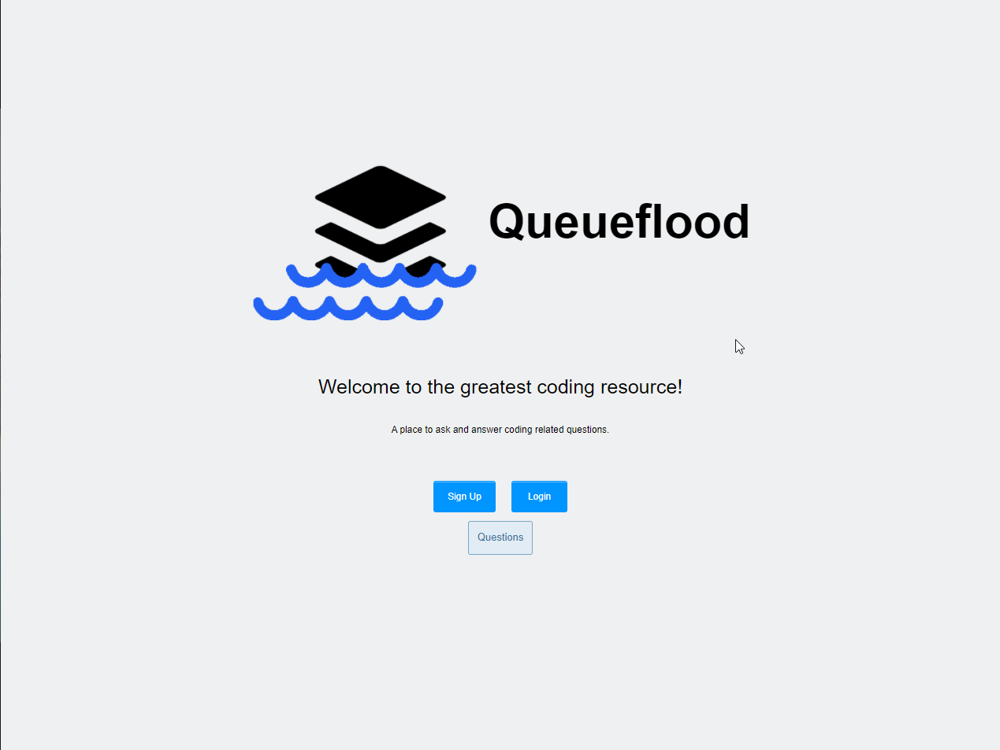
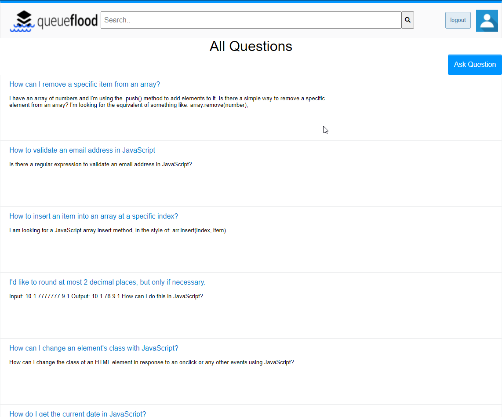

A Stack Overflow-Like Clone
Queueflood is inspired by the popular app, stack overflow. This app is a place where users can look up JavaScript related questions. If a user can not find the answer they are looking for, then they can create an account and create a new question. This allows for other users to view the question and provide an answer
Sometimes, users respond with answers that dont truly answer the question, or sometimes respond with the perfect answer. For this reason a voting system was created on answers. Users can upvote or downvote an answer and give the answer points. The higher the points number the better the question.
This was on of my first projects created. With the help of three other members, we were able to put this all together in the short time of one week.
This project was created using JavaScript only. As far as the frontend we created it using pug instaed of HTML5